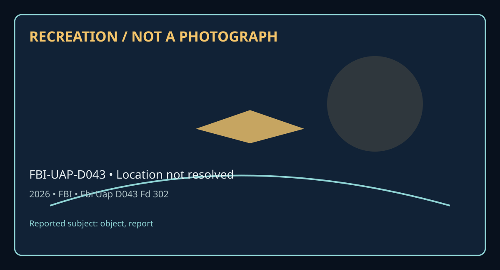

Release 07 / archival case file / FBI-UAP-D043
Fbi Uap D043 Fd 302 Unidentified Aerial Object Observation Report 2026
This fbi uap d043 fd 302 places a object, report thread in a 2026 Location not resolved record.
ID: FBI-UAP-D043
Filename:
FBI-UAP-D043-FD_302_Unidentified_Aerial_Object_Observation_Report-2026.pdfDate marker: 2026
Location: Location not resolved
Agency or collection signal: FBI
Pages read: 11

RECREATION / NOT A PHOTOGRAPH. The diagram is an interpretive editorial aid, not source imagery.
What this document says
The opening page's extracted text begins: “- 1 c,f 2 FD-302 1Re\". 5-8-10! FEDER.\.L BUREAU OF INVESTIGATION Dateofentry ~ - On or about -received from statement co-signed by The statement will be attached to this FD-30~ and is provided verbatim below for ease of reading: "Unidentified Aerial Object Observation Report evening of - :::6 hours, - ~-tationed at called out a detection for a thermally elevated aerial object located west of his position at an estimated bearing of ::::s1 degrees. special Agent I, accompanied by ran from the eastern side of our observation post to the western side in an attempt to collect further data related to the detection from Observation Post 6. We initiated a visual survey o f the western hori::on and almost immediately observed a substantial, nonreflective, darr.: black triangular object most resembling a delta wing drone. We estimated the object's wingspan at approximately nine to fifteen feet, its depth at six to nine feet, and its thickness at one to two feet. I viewed the object through a handheld thermal device and noted it appeared hotter than ambient temperature with a completely consistent thermal signature acr oss the entire airframe and no visible e xhaust gases, while tracked the object unaided for the duration of the sighting. "We both observed the object ascend vertically over a ridge line situated approximately 3.::: miles west of our location on a heading of about '.::68”
Across the 11 pages, the recurring terms are object, report. Those details belong to this file, not to a generic case template. Page-level reading follows:
- Page 1: - 1 c,f 2 FD-302 1Re\". 5-8-10! FEDER.\.L BUREAU OF INVESTIGATION Dateofentry ~ - On or about -received from statement co-signed by The statement will be attached to this FD-30~ and is provided verbatim below for ease of reading: "Unidentified Aerial Object Observation Report evening of - :::6 hours, - ~-tationed at called out a detection for a thermally e
- Page 2: Conrinuat;on ofFD-30.'.:' of l'D-302a\ReY. 5..f:-10) Statement c,f -SA and '2 02 6 2 of 2 ------------------"On velocity, approachin9 our position, then descending southeast into the - along We then transition,c:d from vertical to horizontal flight at a ver~' significant lost visual contact while the object was flying along this - at an estimated range of ab
- Page 3:
- Page 4:
- Page 5:
- Page 6:
- Page 7:
- Page 8:
- Page 9:
- Page 10:
- Page 11:
Historical context and disclosure schema
Read in context, this record belongs to the 2026 information environment: FBI paperwork, a Location not resolved setting, and the reporting conventions visible in the source. Its broader disclosure value is procedural as well as anecdotal: it shows how an observation, material question, investigation, or analytical program was routed, described, and preserved. That makes it comparable to other Release 07 records without collapsing unlike evidence into one event.
Evidence limits
The source establishes that this document exists and records what its authors or quoted witnesses wrote. It does not, by itself, prove the identity, performance, origin, or physical reality of the reported subject. Extraction preserves wording but cannot restore missing attachments, authenticate provenance, or independently validate testimony. Interpretations beyond the page-specific record remain hypotheses.
Source: supplied PDF in research/tranche-07. This article is a research aid, not a claim that the reported object was non-human.